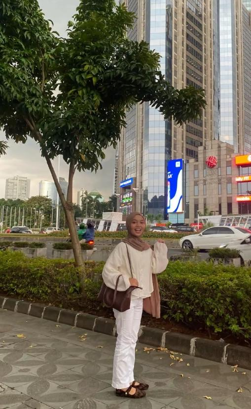
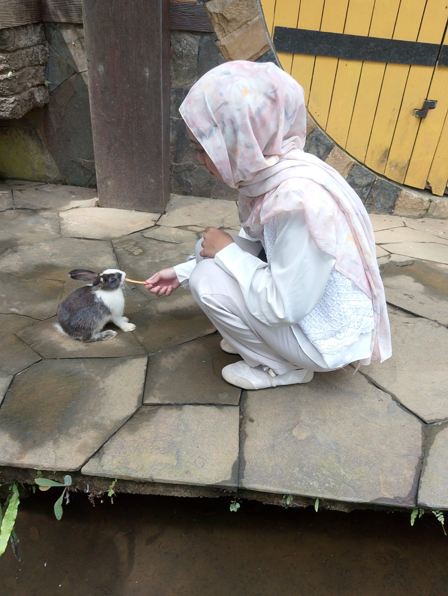
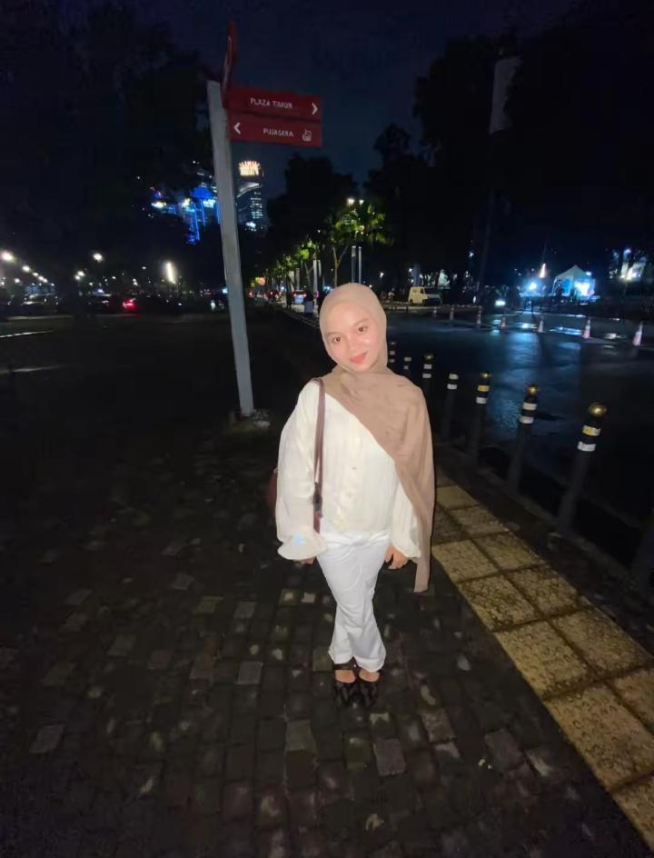
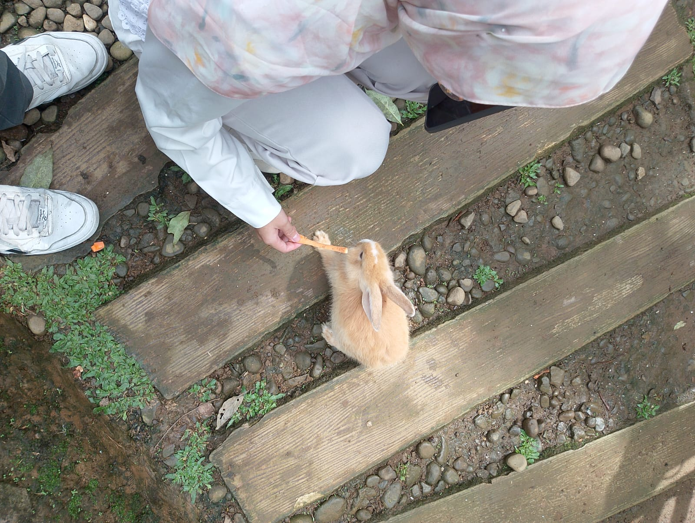
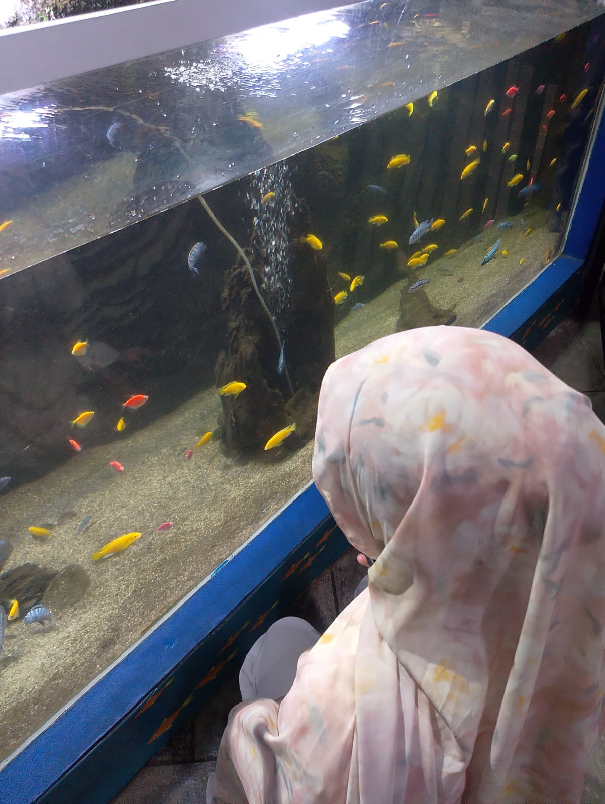
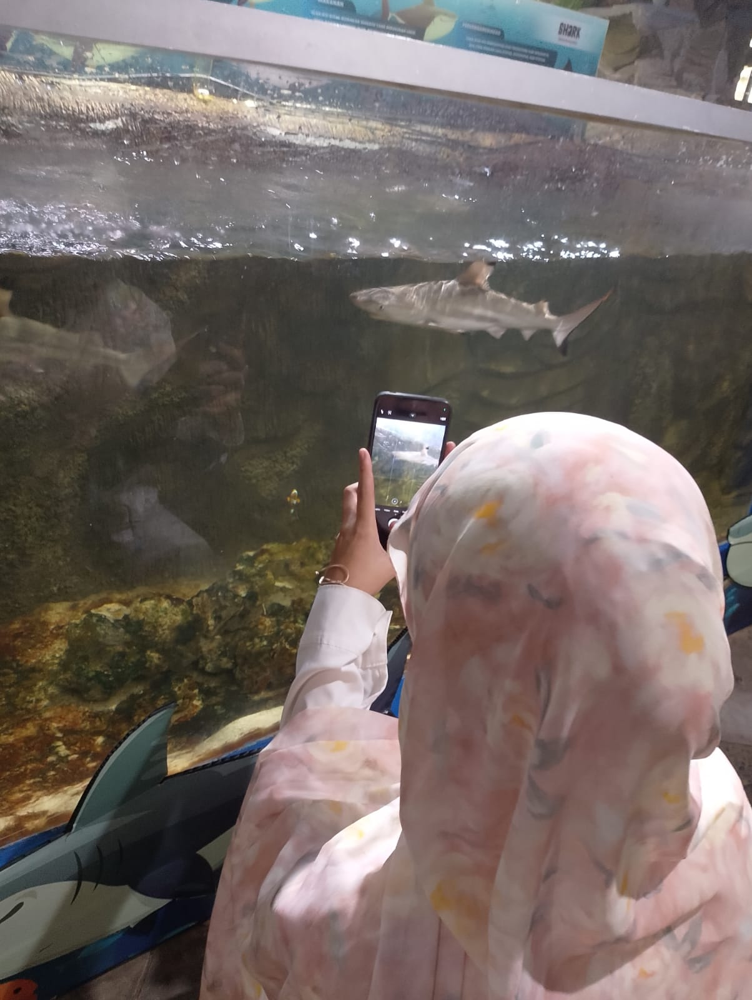
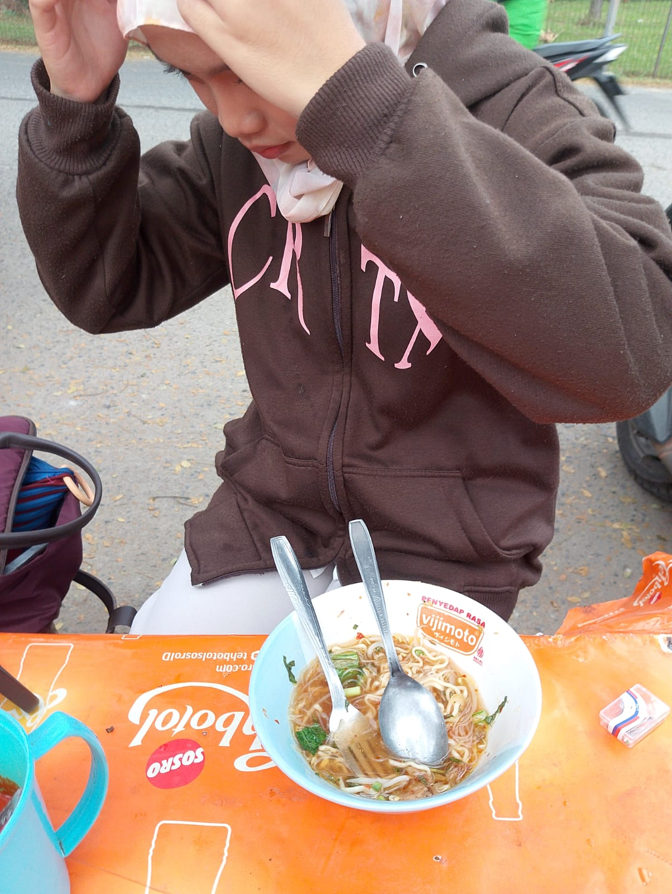

Kenangan
Momen Singkat yang Berharga



Ruang ini khusus dibuat tulus untuk merayakan hari besarmu. Selamat atas kelulusan SMK dan keberhasilanmu diterima di Teknik Sipil Politeknik Negeri Jakarta.


Selesai Berjuang
Babak Baru
Program Studi
Untuk Langkahmu





"Selamat atas kelulusanmu dari SMK. Kerja kerasmu selama ini akhirnya berbuah manis dengan selesainya satu tahap penting dalam hidupmu."
"Selamat mengemban peran baru sebagai mahasiswa Teknik Sipil Politeknik Negeri Jakarta. Menjadi bagian dari PNJ adalah pencapaian yang luar biasa."
"Dunia perkuliahan teknik sipil akan menantang, tapi aku tahu kamu memiliki ketangguhan untuk melewatinya. Teruslah tumbuh dan raih impianmu."
Naila, lewat halaman ini aku ingin menyampaikan pesan jujur yang sepenuhnya bersumber dari lubuk hatiku yang paling dalam.
Meskipun waktu kebersamaan kita terhitung singkat, hadirmu sempat membawa warna baru yang sangat hangat dan menyenangkan di sela-sela akhir masa sekolahmu. Momen manis saat kita menghabiskan waktu bersama, bertukar cerita, dan tertawa lepas di Bogor adalah memori indah yang selalu aku syukuri.
Namun, aku juga sadar sepenuhnya bahwa ada kesalahanku yang akhirnya merusak momen indah tersebut, hingga membuatmu kecewa dan memilih untuk berhenti berjalan bersamaku. Untuk kesalahan itu, aku benar-benar meminta maaf secara tulus dan mendalam, serta sangat menyesali hal itu terjadi.
Aku sangat menghargai keputusanmu untuk menjaga jarak saat ini. Website ini sama sekali tidak dibuat untuk memaksamu kembali atau mengungkit hal sedih, melainkan murni sebagai bentuk apresiasi dan rasa banggaku melihatmu mencapai babak baru yang luar biasa: lulus SMK dan sukses diterima di Teknik Sipil PNJ.
Semoga langkah barumu di dunia perkuliahan selalu dipenuhi kemudahan, dikelilingi kebahagiaan, dan kelak ilmu yang kamu pelajari mampu mengantarkanmu ke masa depan yang kokoh sekuat impianmu. Selamat berjuang menjadi mahasiswa baru!
"Langkah baru menuju masa depan dimulai dari sini."
Semoga setiap ilmu konstruksi yang kamu pelajari menjadi pondasi kokoh untuk membangun masa depan indah yang kamu impikan.